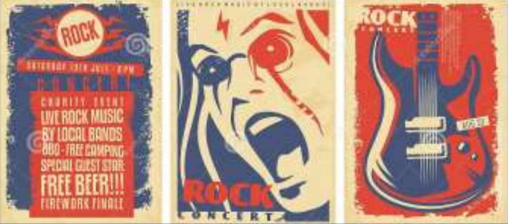

Rock es un término amplio que agrupa una variedad de estilos de música popular originados como rock
and roll a principios de la década de 1950 en Estados Unidos y que evolucionó en un gran rango de
diferentes estilos en los años 1960, particularmente en ese país y Reino Unido.
Tiene sus raíces en el rock and roll de los años 50s, proveniente de la combinación de géneros
anteriores como el blues, rhythm and blues y el country. La música rock también se nutrió fuertemente
del blues eléctrico y el folk, e incorporó influencias del jazz, la música clásica y otras fuentes. El rock se
ha centrado en la guitarra eléctrica, normalmente como parte de un grupo integrado por cantante,
batería, bajo y, algunas veces, instrumentos de teclado como el órgano y el piano. Usualmente, el rock
se centra en las canciones, habitualmente con compás de 4/4 y una estructura verso-estribillo; sin
embargo, el género se ha vuelto extremadamente diverso y las características musicales comunes son
dificiles de definir. Como la música pop, las letras se centran a menudo en el amor romántico, pero
también tratan un rango amplio de otros temas con un enfoque frecuente en lo social, lo personal y lo
politico.

|
|